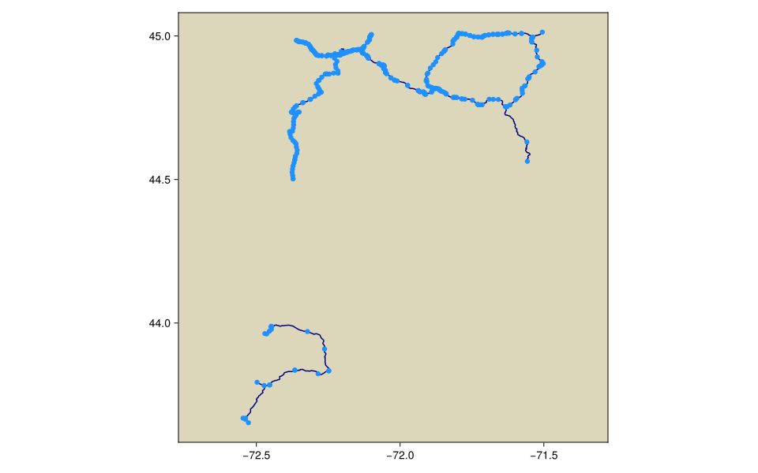
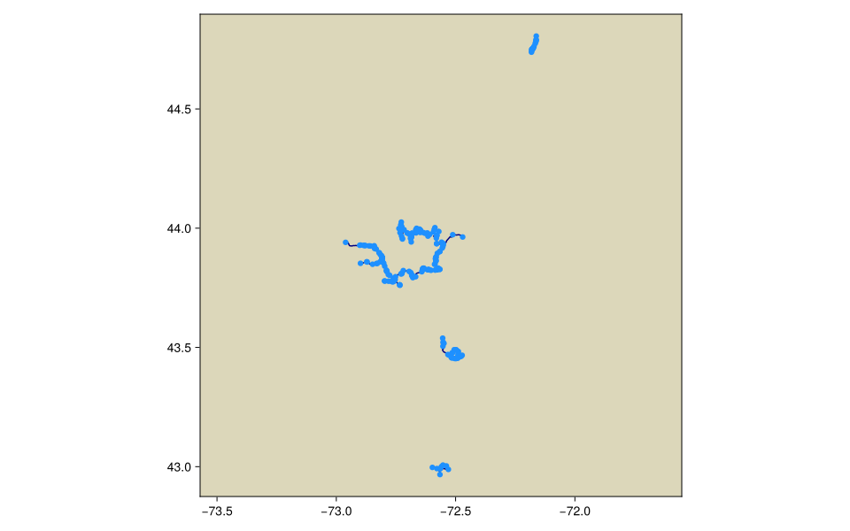

Vermont state-owned fibre
Separate built and not-built or planned state-owned route networks
License, attribution, and modifications
- License: Vermont-Open-Geodata-Policy
- Attribution: Vermont Center for Geographic Information and Vermont Department of Public Service.
- Citation: Vermont Center for Geographic Information, PSD State-Owned Fiber Routes, MapServer layer 46.
- Modifications: CommunicationNetworkDatasets.jl normalized the source records into a simple undirected graph, normalized identifiers and units, and rendered this plot over a modified Natural Earth public-domain basemap.
- Use and redistribution: Direct non-value-added reproduction with intent to sell is restricted; accuracy is unknown.
Source metadata
| Field | Value |
|---|---|
| schema_version | 1 |
| dataset_id | vermont_state_fibre |
| artifact_name | vermont_state_fibre |
| name | Vermont state-owned fibre |
| description | Separate built and not-built or planned state-owned route networks |
| upstream_url | https://maps.vcgi.vermont.gov/arcgis/rest/services/PSD_services/OPENDATA_PSD_LAYERS_SP_NOCACHE_v1/MapServer/46 |
| upstream_version | ArcGIS layer snapshot retrieved 2026-08-08 |
| upstream_checksum | sha256:4d0d7f30e026301056827f2575da75983791fda712895f709c94e8d7ef254f26 |
| retrieval_date | 2026-08-08 |
| extraction_script_commit | 909d5c0411da90988903c738ebedab4a1976b49d |
| license_identifier | Vermont-Open-Geodata-Policy |
| license_url | https://files.vcgi.vermont.gov/other/policies/vermont-open-geodata-policy.html |
| citation | Vermont Center for Geographic Information, PSD State-Owned Fiber Routes, MapServer layer 46. |
| attribution | Vermont Center for Geographic Information and Vermont Department of Public Service. |
| redistribution_notes | Direct non-value-added reproduction with intent to sell is restricted; accuracy is unknown. |
| network_count | 2 |
Network metadata
This table is the complete network catalog returned by networks("vermont_state_fibre").
| schema_version | network_id | name | description | source_reference | node_count | edge_count | component_count | original_directed | coordinate_method | distance_method | license_identifier | license_url | citation | attribution | redistribution_notes | source_node_count | source_edge_count | self_loops_removed | parallel_edges_combined | normalized_segment_count | built_status |
|---|---|---|---|---|---|---|---|---|---|---|---|---|---|---|---|---|---|---|---|---|---|
| 1 | built | Built state-owned fibre routes | Vermont state-owned fibre routes grouped by the publisher's BUILT status. | MapServer layer 46; BUILT=YES | 413 | 305 | 108 | false | source_geometry_vertex | projected_geometry | Vermont-Open-Geodata-Policy | https://files.vcgi.vermont.gov/other/policies/vermont-open-geodata-policy.html | Vermont Center for Geographic Information, PSD State-Owned Fiber Routes, MapServer layer 46. | Vermont Center for Geographic Information and Vermont Department of Public Service. | Reuse is allowed, but direct non-value-added reproduction with intent to sell is restricted. | 0 | 302 | 0 | 0 | 305 | YES |
| 1 | not_built_planned | Not-built or planned state-owned fibre routes | Vermont state-owned fibre routes grouped by the publisher's BUILT status. | MapServer layer 46; BUILT=NO | 238 | 225 | 18 | false | source_geometry_vertex | projected_geometry | Vermont-Open-Geodata-Policy | https://files.vcgi.vermont.gov/other/policies/vermont-open-geodata-policy.html | Vermont Center for Geographic Information, PSD State-Owned Fiber Routes, MapServer layer 46. | Vermont Center for Geographic Information and Vermont Department of Public Service. | Reuse is allowed, but direct non-value-added reproduction with intent to sell is restricted. | 0 | 240 | 0 | 15 | 240 | NO |
Network plots
Built state-owned fibre routes

Not-built or planned state-owned fibre routes
